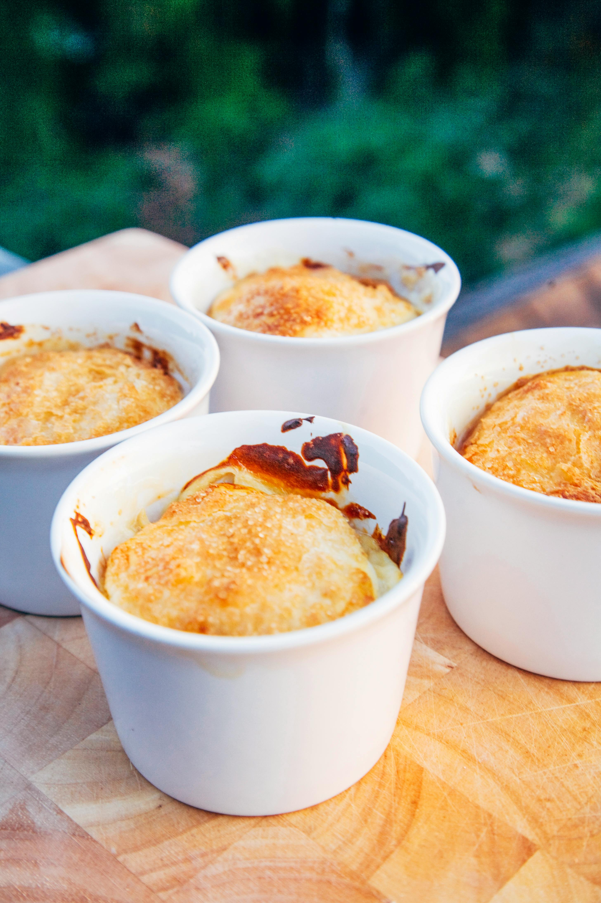

How To Make Crème Brûlée

Recipe Description
This totally easy to follow recipe will make your life a 100 times better because by the end of it, you will be enjoying the most awesome food ever!
The preparation time will be just 20 minutes, rest time 4 hours and cooking time just 30 minutes!
After you're all done you will have yourself 4 servings of the tastiest crème brûlée.
List of Ingredients
- 400ml high fat cream
- 140ml whole milk
- 85g sugar (preferrably brown)
- 5 egg yolk
- 1 vanilla bean (optionally essence)
- Lemon peel, rubbed
- Sugar for the top crust
Steps
Phew, that is done! Now to the moment you've all been waiting for - the steps to the best food you've ever had:
- Mix cream, milk, yolks.
- Add sugar, vanilla, lemon.
- Let rest for at least 30 minutes (optionally overnight).
- Pour into 4-6 fireproof ramekins.
- Pre-heat oven to 150°C and put the grease pan on the middle rail.
- Put the ramekins onto the grease pan and fill it with boiling water.
- Let the crème cook for 55 minutes.
- Let the ramekins cool down to room temperature and put them in the fridge for at least 2 hours.
- Spread a teaspoon of sugar onto each ramekin.
- Use a blowtorch to flambé the sugar or the grill of your owen may work too.
Enjoy!
See our other two recipes:
Pretzels Recipe
Waffles Recipe
or go Home.